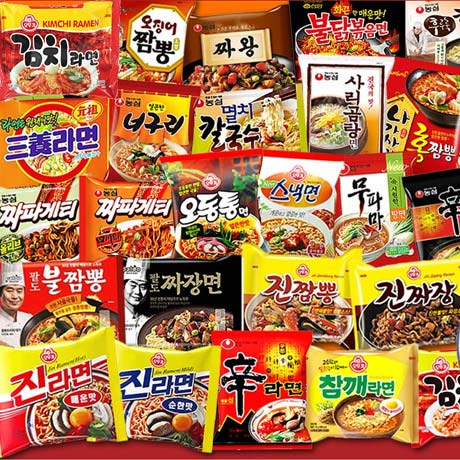
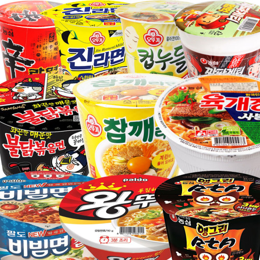
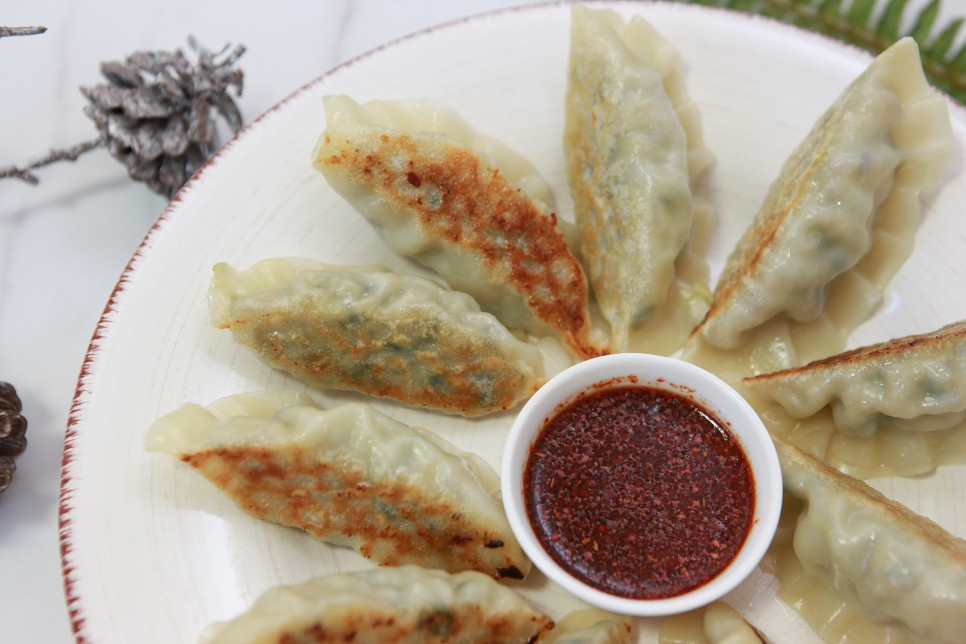
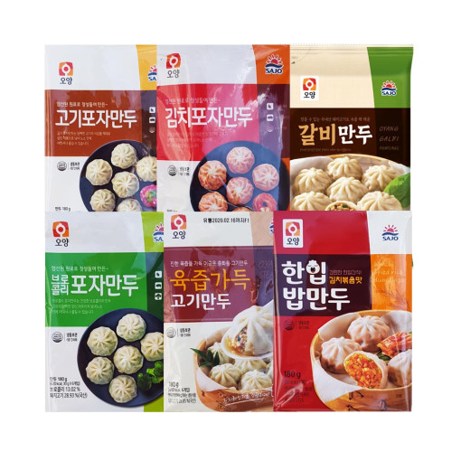
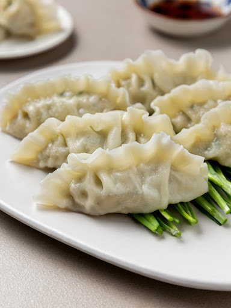
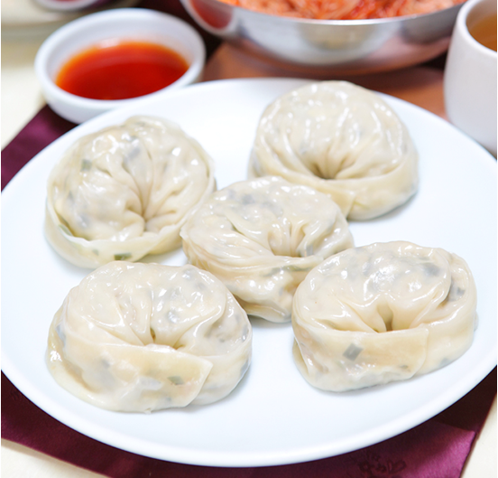
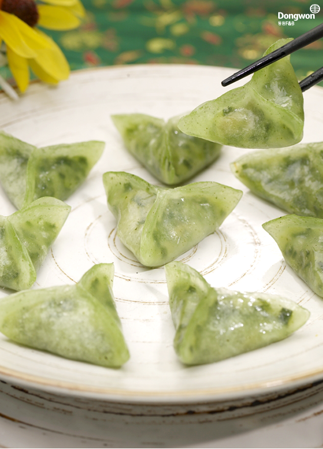
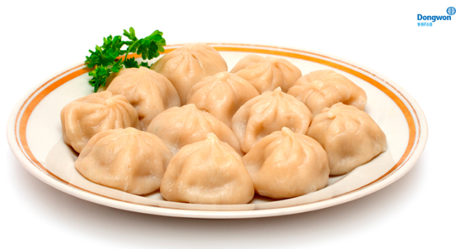
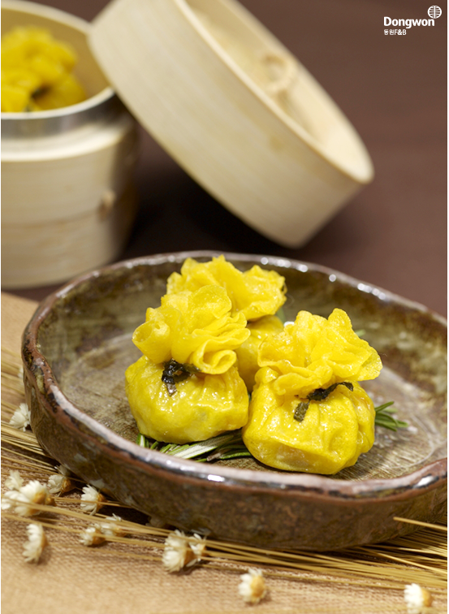

김은 보라털과에 속하는 해조(海藻)류를 종이형태로 얇고 넓게 펴서 말린 음식으로, 한국에서는 매우 오래전(적어도 삼국시대)부터 김을 먹어왔습니다.
웰빙 식품인 해초류답게 적당량의 섬유질과 미네랄이 들어 있고, 아이오딘, 비타민B12 등이 풍부하게 함유되어 있어 좋은 식품입니다.
김은 다양한 형태로 가공이 가능해서 한국에서는 기름, 소금이 뿌려져 밥과 함께 싸먹을 수 있는 '조미김/맛김'을 주로 먹지만, 외국에서는 한국 조미김을 간식으로 먹거나
김으로 만들어진 다양한 김스낵(와사비맛 김, 김치맛 김, 불고기맛 김, 김자반, 김부각 등)을 주로 먹습니다. 기호에 따라 양념된 김을 먹지 않고 생김(굽지 않은 김)
을 직접 구워서 간장 등의 양념과 함께 먹기도 합니다.
라면
라면은 면과 스프, 물만 있으면 간단하게 조리할 수 있는 간편식품 중 하나로 다양한 종류에 가격이 저렴하고 간단히 먹을 수 있다는 장점이 있습니다.
면의 종류는 라면에 따라 튀긴 면, 건조 면, 생면 등으로 나뉘고, 재료는 면, 스프, 후레이크(야채, 버섯 등이 건조된 상태로 들어있음)정도가
일반적입니다. 기호에 따라 추가적인 재료(파, 계란 등)를 넣어 먹을 수도 있습니다. 좀 더 간편하게 먹을 수 있는 '컵라면'의 경우, 뜨거운 물만 있다면
조리 방법대로 진행하여 라면을 먹을 수 있습니다. 이러한 특성 때문에 간편히 한 끼를 때울 때, 혹은 긴급시의 비상식량으로 사용되기도 합니다.


'불닭볶음면'과 같은 일부 라면은 아주 매운 맛에 도전할 수 있습니다. 유튜브나 SNS를 통해 많은 사람들이 매운 맛에 도전하고, 후기를 올리고
즐기는 모습을 볼 수 있습니다.
라면은 누구나 쉽게 끓일 수 있지만, 맛있게 끓이기는 어렵다고 합니다. 『백종원의 스페셜 라면』영상을 참고하셔서 맛있는 라면 끓여보시기 바랍니다!
만두

만두는 밀가루나 메밀가루 반죽으로 껍질을 만들어 고기, 두부, 김치 등으로 버무린 소를 넣고 찌거나 튀긴 음식으로, 만두의 종류는 매우 다양하지만
모두 고지방 고열량이라는 공통점이 있습니다. 만두는 직접 만들거나 가게에서도 먹을 수 있지만, 대부분의 경우 마트에서 판매하는 냉동 만두를 구입해서 먹습니다.
만두 종류에 따라 후라이팬에 굽거나, 기름에 튀기거나, 찜기에 쪄서 먹기도 하고 에어프라이어를 이용해 굽거나, 전자레인지 용기에 옮겨담아
물을 조금 추가한 후 전자레인지에 돌려서 간편하게 먹기도 합니다. 이외에도 만두국, 만두전골, 비빔만두 등 여러 방법으로
냉동만두를 활용할 수 있습니다.
만두의 종류
다양한 종류의 냉동만두

※ 익히는 방법에 따라
찐만두
군만두
물만두
※ 모양에 따라
반달모양(교자)만두 
둥근모양만두(개성만두) 
삼각만두 
포자만두 
복주머니만두 
※ 만두를 찔 때 TIP! 만두를 찔 때 찜기에 물을 적당량 넣고 그냥 찌게 되면 찐만두를 먹을 때 만두피가 서로 붙어서 찢어지는 현상이 발생합니다.
이 문제를 어느정도 방지하려면 만두를 찔 때 만두피가 충분히 젖을 수 있도록 물을 뿌려 준 후 찌는 것이 중요합니다. 이렇게 하면 더 이상 찐만두를
떼어낼 때 만두끼리 서로 붙어서 피가 찢기는 현상을 막을 수 있습니다!